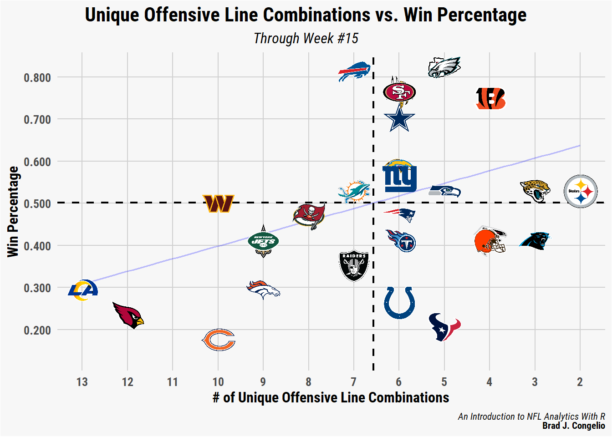
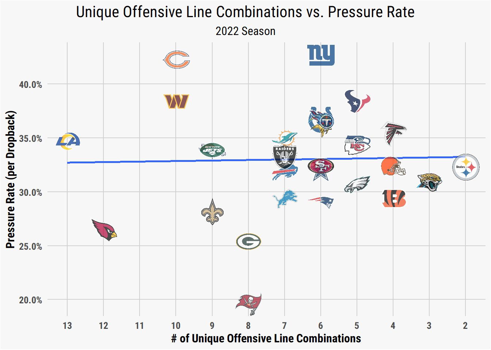
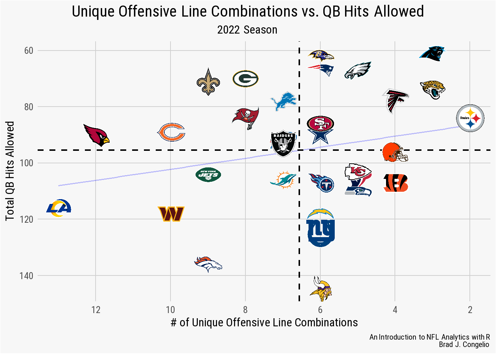

participation <- nflreadr::load_participation(2022, include_pbp = TRUE)
rosters <- nflreadr::load_rosters(2022) %>%
select(full_name, gsis_id, depth_chart_position)
oline_participation <- participation %>%
filter(play_type %in% c("pass", "run")) %>%
group_by(nflverse_game_id, possession_team, fixed_drive) %>%
filter(fixed_drive == 1 | fixed_drive == 2) %>%
filter(row_number() == 1) %>%
select(nflverse_game_id, play_id, possession_team,
offense_personnel, offense_players) %>%
dplyr::mutate(gsis_id = stringr::str_split(offense_players, ";")) %>%
tidyr::unnest(c(gsis_id)) %>%
left_join(rosters, by = c("gsis_id" = "gsis_id"))
oline_participation <- oline_participation %>%
filter(depth_chart_position %in% c("T", "G", "C")) %>%
group_by(nflverse_game_id, possession_team) %>%
mutate(starting_line = toString(full_name)) %>%
select(nflverse_game_id, possession_team,
offense_personnel, starting_line) %>%
distinct()2 An Introduction to NFL Analytics and the R Programming Language
2.1 Introduction
It might seem odd to begin an introductory book with coding and visualization in Chapter 1, while placing information about learning the basics of the tidyverse in a later chapter. But there is good reason why I adopted this pedagogical approach in this book. As explained by Hadley Wickham and Garrett Grolemund in their outstanding book R for Data Science, the process of reading in and then cleaning data is not exactly the most exciting part of doing analytics. As evidence suggest, early excitement about and integration into a topic increases the likelihood of following up and learning the “boring” material.
Because of this, I follow the approach of Wickham and Grolemund and provide data that is already, for the most part, “tidied” and ready to be used. We will however, in later chapters, pull raw data directly from it source (such as nflreadr, Pro Football Reference, and Sports Info Solutions) that requires manipulation and cleaning before any significant analysis can begin.
Important
I am assuming, while you may not have a full grasp of the tidyverse yet, that you do currently have base R and RStudio installed. If you do not, more detailed instructions are provided in Chapter 2. If you would rather jump right into this material, you can download base R and RStudio at the following links. Once both are installed, you can return to this point in the chapter to follow along.
To download/install base R: cran.rstudio.com
To download/install RStudio: RStudio Desktop (scroll to bottom of page for Mac options)
Moreover, as briefly outlined in the Preface, we move through the process of learning NFL analytics via a close relationship with investigative inquiry. In this instance, we will define the process of investigative inquiry as one that seeks both knowledge and information about a problem/question through data-based research. To that end, we will routinely use the process throughout this book to uncover insights, patterns, and trends relating to both players and teams that serve to help us answer the problem/question we are examining.
While it can - and should - be entertaining to develop visualization and models around arbitrarily picked statistics and metrics, it is important to remember that the end goal of the process is to glean useful insights that, ultimately, can be shared with the public. Much like the work done by a data analyst for a Fortune 500 company, the work you produce as a result of this book should do two things: (1.) provide deeper insight and knowledge about NFL teams and players and (2.) effectively communicate a story.
This is why the process of investigative inquiry is ingrained, as much as possible, into every example provided in this book. In doing so, the standard outline for completing an investigate inquiry is modified to fit the needs of this book - specifically, the addition of communicating your findings to the public at the end.
2.2 The Investigate Inquiry Outline
Identify the problem or question. The first step in any investigative inquiry is to clearly define the problem or question that you are trying to answer. Many times, fans have questions about their individuals favorite team and/or players. For example, the 2022 Los Angeles Rams - the defending Super Bowl Champions - were eliminated from playoff contention with three weeks remaining in the season. With the early exit, the Rams tied the 1999 Denver Broncos for the earliest elimination from playoff contention for any prior Super Bowl Champion. The Rams’ early elimination can be explained by the high number of injuries during the season, including Matthew Stafford, Cooper Kupp, and Aaron Donald. Perhaps the biggest factor, though, was the inability to keep a healthy offensive line. In this specific example, in terms of identifying the problem or question, a potential problem or question to explore is: how many unique combinations of offensive linemen did the 2022 LA Rams use and where does it rank in NFL history? Have other teams in recent history faced the same amount of offensive line turnover yet still make the playoffs? As you can see, there are a number of different avenues in which the problem or question surrounding the Rams’ offensive line injury issues can be explored.
Gather data. With a question or problem determined, we now turn to the process of finding and gathering the necessary data to find answers. Unfortunately, data is not always going to be available to answer your investigate inquiry. For example, NFL’s tracking data is only released in partial form during the annual Big Data Bowl (explored later in Chapter ##). In the event that your question or problem requires data that is not available, you must loop back to Step 1 and reconfigure your question to match available data. In the case of the 2022 LA Rams’ offensive line, access to data that can answer the question is available through two cores avenues: the
load_participationandload_snap_countsfunctions within thenflversefamily of packages.Clean and prepare the data. It is not often that the data you obtain to answer your question will be perfectly prepared to immediate analysis. As will be explored below, the data collected to explore the Rams’ offensive line combinations required both (1.) a critical thought process on how to best solve oddities in the data while still producing correct and reliable information (2.) the cleaning and preparation to make the changes as a result of that critical thinking process. As you progress through the many examples and exercises in this book, you will often be presented with prepared datasets that require you to determine the best approach to data manipulation through this critical thinking and cleaning/preparation process.
Analyze the data. After problem solving to ensure the data is as reliable and consistent as possible, we can turn to analyzing the data. In this case, since we are concerned with unique combinations of offensive linemen, we can quickly get results by using the
n_distinctfunction withindplyr.-
Visualize the data. There are generally two options for visualizing data: plotting with
ggplotor creating a table withgtand the outstanding companion packagegtExtras. To that end, considering the following can help determine whether to present your findings in char or table format.The type of data you are working with. If you have a large amount of numerical data that needs to be compared or analyzed, a table may be the most effective way to present this information. On the other hand, if you want to highlight trends or patterns in your data, a chart can help illustrate the information in a more clear manner.
The purpose of your visualization. You must consider what you ultimately want to communicate with your visualization. If you want to provide a detailed breakdown of your data, a table is usually more appropriate. However, if you want to show the overall trend or pattern in your data, a chart is going to be more effective.
The audience for your visualization. As you determine whether to use a chart or a table, think about who will be viewing your visualization and what level of detail they need. If your audience is familiar with the data and needs to see precise value, a table may be a better choice. If your audience is not as familiar with the data and you want to highlight the main trends or patterns, a chart my be more effective.
Below, we will explore visualizing our offensive linemen combinations in both chart and table format using multiple different variables for sake of comparison.
Interpret and communicate the results. Lastly, it is time to communicate your results to the public. Whether this be through Twitter, a team blog, or a message board, there are numerous items to consider when preparing to build your story/narrative for sharing. This will be covered further in Chapter ## (Visualization) as well.
With a clear direction via the investigative inquiry process, we can turn to taking a deeper dive into the LA Rams’ 2022 offensive linemen issue.
2.3 Investigating the Rams’ 2022 Offensive Line
The “Super Bowl hangover” is real.
At least for the loser of the big game.
Since the AFL and NFL merged in 1970, a total of 15 of the 51 losers of the Super Bowl went on to miss the playoffs in the following season, while 13 failed to even achieve a winning record. Teams coming off a Super Bowl victory have generally fared better, with the winners putting together a .500 record or better 45 out of 51 times.
Of those six teams to not achieve a .500 record after winning the Super Bowl, only a few have been as downright terrible as the 2022 Los Angeles Rams.
As explained by Mike Ehrmann, the Rams’ poor Super Bowl defense is “what happens when a laundry list of things go wildly wrong at the same time” (Kirschner 2022). As outlined above in our investigative inquiry outline, one of the core items on the Rams’ laundry list of bad luck was the absurd amount of offensive linemen ending up on the injured list. This, combined with losing Andrew Whitworth to retirement after the Super Bowl, led to quarterback Matthew Stafford being sacked on 8.6-percent of his dropback attempts (a rate that nearly doubled from the previous season).
Given that context, just how historically bad was the Rams’ 2022 offensive line turnover? We can being diving into the data to find our results and build our story.
2.3.1 Unique Offensive Line Combinations: How to Collect The Data?
To begin obtaining and preparing the data to determine the number of unique offensive line combinations the Rams had in the 2022 season, I turned to two possible options: the load_participation and load_snap_counts functions within the nflreadr package. The load_participation function will return, if include_pbp = TRUE a list of every player ID number that was on the field for each play, whereas load_snap_counts returns - on a per game basis - the percentage of snaps each player was on the field for.
In the end, using load_snap_counts created the most accurate, reliable, and straightforward way in each to collect unique offensive line combinations. The load_participation function resulted in several oddities in the data (not with the collection of it by the nflverse maintainers, but with individual NFL team strategies and formations). To highlight this, the following code will select the first offensive play for each team, in each game, up to week 15 of the 2022 season.
While the output using the load_participation function is correct, a quick examination of the offense_personnel column causes concern about the viability of this approach to calculate the total number of unique offensive line combinations. A grouping and summing of the offense_personnel column highlights the issue.
oline_participation %>%
group_by(offense_personnel) %>%
summarize(total = n())# A tibble: 14 x 2
offense_personnel total
<chr> <int>
1 1 RB, 0 TE, 4 WR 4
2 1 RB, 1 TE, 3 WR 240
3 1 RB, 2 TE, 2 WR 171
4 1 RB, 3 TE, 1 WR 19
5 2 QB, 1 RB, 1 TE, 2 WR 4
6 2 RB, 0 TE, 3 WR 1
7 2 RB, 1 TE, 2 WR 89
8 2 RB, 2 TE, 1 WR 14
9 3 RB, 1 TE, 1 WR 1
10 6 OL, 1 RB, 0 TE, 3 WR 2
11 6 OL, 1 RB, 1 TE, 2 WR 12
12 6 OL, 1 RB, 2 TE, 1 WR 1
13 6 OL, 2 RB, 0 TE, 2 WR 1
14 7 OL, 0 RB, 0 TE, 0 WR,1 P,1 LS,1 DL,1 K 1Of concern are rows 10 through 14. In 15 different cases, a team ran its first play of the game with six offensive linemen. And, in one case, the resulting data indicates that the Dallas Cowboys ran their first play in week 5 against the LA Rams with seven offensive linemen, one punter, one long snapper, and a kicker.
In the first case, the data is correct that the teams ran their first offensive play with six offensive linemen. For example, in its week 3 game against the Steelers, the data indicates the Cleveland Browns as having started Jack Conklin (tackle), Jedrick Wills Jr. (tackle), Joel Bitonio (guard), Michael Dunn (guard), Wyatt Teller (guard), and Ethan Pocic (center). A view of the NFL’s All-22 film confirms that, indeed, all six offensive linemen were on the field for the Browns’ first snap of the game.

In the second case, Dallas’ offense personnel on its “first play” from scrimmage is the result of the Cowboys returning a fumble for a touchdown on the Rams’ first offensive possession with a botched snap on the ensuing extra point attempt. Because of that, the extra point attempt is no longer scored as an extra_point in the play_type variable within the play-by-play data, but a rushing attempt. As a result of this oddity, the data is correct in listing Dallas’ first offensive play as coming out of an extra point personnel grouping.
Both of these examples are problematic as a team’s “starting offensive line” is considered to be just five players: the left tackle, the left guard, the center, the right guard, and the right tackle. In order to correctly determine the number of combinations used, we need to first determine the five most-commonly used offensive linemen for each team. Because of the off-the-wall situations that can occur in football, building offensive line combinations through personnel groupings in the play-by–play data is tricky, at best.
Because of this, we can turn to the load_snap_counts function with the nflreadr package to determine the number of unique offensive line combinations. The process to do so occurs over several steps and involves decision-making on our end on how best to accurately represent the five core offensive linemen for each team.
oline_snap_counts <- nflreadr::load_snap_counts(seasons = 2022)
oline_snap_counts <- oline_snap_counts %>%
select(game_id, week, player, position, team, offense_pct) %>%
filter(position %in% c("T", "G", "C")) %>%
group_by(game_id, team) %>%
arrange(-offense_pct) %>%
slice(1:5) %>%
ungroup()First, we obtain snap count data from the 2022 season and write it into a dateframe titled oline_snap_counts. After, we select just the necessary columns and then filter out the position information to include only tackles, guards, and centers. After grouping each individual offensive line by game_id and its respective team, we arrange each player’s snap count in descending order using offense_pct.
And this is where a decision needs to be made on how to best construct the five starting offensive linemen for each team. By including slice(1:5), we are essentially selecting just the five offensive linemen with the most snap counts in that singular game.
Are these five plays necessarily the same five that started the game as the two tackles, two guards, and one center? Perhaps not. But, hypothetically, a team’s starting center could have been injured a series or two into the game and the second-string center played the bulk of the snaps in that game.
Because of such situations, we can make the argument that the five offensive line players with the highest percentage of snap counts for each unique game_id are to be considered the combination of players used in that game.
Next, let’s make the decision to arrange each team’s offensive line, by game, in alphabetical order. Since we do not have a reliable way to include specific offensive line positions (that is, we have tackle instead of left tackle or right tackle), we can build our combination numbers strictly based on the five downed linemen, regardless of specific position on the line of scrimmage.
After, we use the toString function to place all five names into a single column (starting_line) and then filter out the data to include just one game_id for the linemen.
oline_snap_counts <- oline_snap_counts %>%
group_by(game_id, team) %>%
arrange(player, .by_group = TRUE)
oline_final_data <- oline_snap_counts %>%
group_by(game_id, week, team) %>%
mutate(starting_line = toString(player)) %>%
select(game_id, week, team, starting_line) %>%
distinct(game_id, .keep_all = TRUE)The end result includes the game_id, the week, the team abbreviation, and the starting_line column that includes the names of the five offensive line players with the highest snap count percentage for that specific game.
head(oline_final_data)# A tibble: 6 x 4
# Groups: game_id, week, team [6]
game_id week team starting_line
<chr> <int> <chr> <chr>
1 2022_01_BAL_NYJ 1 BAL Ben Powers, Kevin Zeitler, Morgan Moses, Patrick ~
2 2022_01_BAL_NYJ 1 NYJ Alijah Vera-Tucker, Connor McGovern, George Fant,~
3 2022_01_BUF_LA 1 BUF Dion Dawkins, Mitch Morse, Rodger Saffold, Ryan B~
4 2022_01_BUF_LA 1 LA Brian Allen, Coleman Shelton, David Edwards, Jose~
5 2022_01_CLE_CAR 1 CAR Austin Corbett, Brady Christensen, Ikem Ekwonu, P~
6 2022_01_CLE_CAR 1 CLE Ethan Pocic, James Hudson, Jedrick Wills Jr., Joe~With the data cleaned and prepared, we are now able to take our first look at the results. In the code below, we are grouping by all 32 NFL team and then summarizing the total number of unique offensive line combinations used through the first 15 weeks of the 2022 season.
total_combos <- oline_final_data %>%
group_by(team) %>%
summarize(combos = n_distinct(starting_line)) %>%
arrange(-combos)Despite much of the media focus being on the Rams’ poor performance, given their title of defending Super Bowl Champions, the Arizona Cardinals had nearly as many unique offensive line combinations at the conclusion of the 2022 regular season.
With the data cleaned and prepared, let’s use it to create a ggplot graph and, to do so, compare the relationship between a team’s number of unique offensive lines against its winning percentage. To complete this, we first need to join the winning percentages to our existing total_combos dataframe.
2.3.2 Unique Offensive Line Combinations vs. Win Percentage
To bring in the individual winning percentages, we will use the get_nfl_standings function from espnscrapeR and then combine the two sets of data on team abbreviations via a left_join. Unfortunately, the team abbreviation returned from espnscrapeR does not match up with those used in the nflverse for both the Los Angeles Rams and the Washington Commanders (LAR vs. LA and WSH vs. WAS). As evidenced in the below code, correcting this issue is simple with the clean_team_abbrs function in the nflreadr package.
records <- espnscrapeR::get_nfl_standings(season = 2022) %>%
select(team_abb, win_pct)
records$team_abb <- nflreadr::clean_team_abbrs(records$team_abb)
total_combos <- total_combos %>%
left_join(records, by = c("team" = "team_abb"))After collecting team records and merging them into the offensive line combination data, we can use ggplot to visualize the data. Individual team logos are used in place of the typical geom_point by using the nflplotR package.
Important
Please note in the below ggplot coding that we are using a custom theme, nfl_analytics_theme(). If you wish to replicate the below visualization using the theme, run the below code to place the theme into your RStudio environment allowing you to call it within ggplot.
If you do not have the “Roboto Condensed” font installed, ggplot will give an error message but ultimately replace it with another font on your system. If you wish to install “Roboto Condensed,” you can do so with the showtext package.
nfl_analytics_theme <- function(..., base_size = 12) {
theme(
text = element_text(family = "Roboto Condensed", size = base_size, color = "black"),
axis.ticks = element_blank(),
axis.title = element_text(face = "bold"),
axis.text = element_text(face = "bold"),
plot.title.position = "plot",
plot.title = element_text(size = 16,
face = "bold",
vjust = .02,
hjust = 0.5),
plot.subtitle = element_text(hjust = 0.5),
plot.caption = element_text(size = 8,
face = "italic"),
panel.grid.minor = element_blank(),
panel.grid.major = element_line(color = "#d0d0d0"),
panel.background = element_rect(fill = "#f7f7f7"),
plot.background = element_rect(fill = "#f7f7f7"),
panel.border = element_blank())
}ggplot(data = total_combos, aes(x = combos, y = win_pct)) +
geom_smooth(se = FALSE, formula = 'y ~ x', method = "lm") +
nflplotR::geom_nfl_logos(aes(team_abbr = team), width = 0.065, alpha = 0.7) +
scale_x_reverse(breaks = scales::pretty_breaks(n = 12)) +
scale_y_continuous(breaks = scales::pretty_breaks(n = 6),
labels = scales::label_number(accuracy = 0.001)) +
nfl_analytics_theme() +
xlab("# of Unique Offensive Line Combinations") +
ylab("Win Percentage") +
labs(title = "# of Unique Offensive Line Combinations vs. Win Percentage",
subtitle = "Through Week #15")
As can be seen in the resulting graph - which shows little, if any, statistical correlation - there are still teams with worse records than the Rams and Cardinals that have fewer unique offensive line combinations (the Houston Texans and the Chicago Bears, for example). Perhaps there is a better metric that correlates more strongly with a team’s number of offensive line combinations?
To begin exploring that, we can hypothesize that more offensive line combinations leads to more quarterback pressures and an increased pressure rate as the various member of the offensive line never have time to properly “gel.”
2.3.3 Unique Offensive Line Combinations vs. Pressure Rate
Rather than calculate the data ourselves (which is the total number dropbacks divided by the total number of pressures), we can turn away from nflverse data and retrieve the information from the SIS Data Hub. After downloading the spreadsheet, we can read it into the RStudio environment using vroom and then merge the information into our existing total_combos by matching on the individual team abbreviations.
# A tibble: 6 x 3
season team_abbr pressure_percent
<dbl> <chr> <dbl>
1 2022 KC 34.2
2 2022 PHI 30.7
3 2022 SEA 34.8
4 2022 CIN 29.4
5 2022 SF 32.4
6 2022 MIA 35 With the pressure rate now merged with our unique offensive line combination data, we can make slight adjustments to our prior ggplot code to examine any potential relationship.
ggplot(data = total_combos, aes(x = combos, y = pressure_percent)) +
geom_smooth(se = FALSE, formula = 'y ~ x', method = "lm") +
nflplotR::geom_nfl_logos(aes(team_abbr = team), width = 0.065, alpha = 0.7) +
scale_x_reverse(breaks = scales::pretty_breaks(n = 12)) +
scale_y_continuous(breaks = scales::pretty_breaks(n = 6),
labels = scales::percent_format(scale = 1, accuracy = 0.1)) +
nfl_analytics_theme() +
xlab("# of Unique Offensive Line Combinations") +
ylab("Pressure Rate (per Dropback)") +
labs(title = "# of Unique Offensive Line Combinations vs. Pressure Rate",
subtitle = "2022 Season")
Again, there does not seem to be any statistical correlation between a team’s number of unique offensive line combinations and the pressure rate per dropback allowed. Rather than examining the pressure per dropback rate, perhaps there is a correlation between a the number of unique offensive line combinations and the total number of quarterback hits allowed through the season? To determine the validity of that hypothesis, we can use data from nflreadr to collect total QB hits.
2.3.4 Unique Offensive Line Combinations vs. QB Hits Allowed
To begin, we can collect the QB hit data from nflreadr being sure to group_by the posteam variable in order to calculate the number of QB hits allowed by each team’s offensive line. After, we can merge the data into our existing total_combos dataset and then produce the plot.
After first filtering out any data that does not include posteam information, we can group_by each individual offensive unit and then calculate the total sum of QB hits for each. We can then take our new dataframe titled qb_hits_combined and plot the results.
ggplot(data = qb_hits_combined, aes(x = combos, y = total_qb_hits)) +
geom_smooth(se = FALSE, formula = 'y ~ x', method = "lm") +
nflplotR::geom_nfl_logos(aes(team_abbr = team), width = 0.065, alpha = 0.7) +
scale_x_continuous(breaks = scales::pretty_breaks()) +
scale_y_continuous(breaks = scales::pretty_breaks()) +
nfl_analytics_theme() +
xlab("# of Unique Offensive Line Combinations") +
ylab("Total QB Hits Allowed") +
labs(title = "# of Unique Offensive Line Combinations vs. QB Hits Allowed",
subtitle = "2022 Season")
2.4 Exploring Explosive Plays per Touchdown Drive
pbp <- nflreadr::load_pbp(2022)
explosive <- pbp %>%
filter(!is.na(posteam) & !is.na(yards_gained) & fixed_drive_result == "Touchdown") %>%
filter(play_type != "kickoff" & play_type != "extra_point" & !is.na(down)) %>%
select(posteam, game_id, drive, yards_gained)
explosive_per_td <- explosive %>%
group_by(posteam, game_id, drive) %>%
summarize(max_yards = max(yards_gained)) %>%
mutate(explosive_play = if_else(max_yards >= 20, 1, 0))
explosive_final <- explosive_per_td %>%
group_by(posteam) %>%
summarize(
tds_no_explosive = sum(explosive_play == 0),
tds_explosive = sum(explosive_play == 1)
)
total_drives_calc <- pbp %>%
group_by(posteam, week) %>%
filter(!is.na(posteam) & fixed_drive_result == "Touchdown") %>%
summarize(total_drives = n_distinct(fixed_drive))
total_drives_calc <- total_drives_calc %>%
group_by(posteam) %>%
summarize(total_drives = sum(total_drives))
explosive_final <- explosive_final %>%
left_join(total_drives_calc, by = c("posteam" = "posteam")) %>%
mutate(percent_no_exp = tds_no_explosive / total_drives,
percent_w_exp = tds_explosive / total_drives) %>%
select(posteam, percent_no_exp, percent_w_exp)
ggplot(explosive_final, aes(y = reorder(posteam, percent_w_exp), x = percent_w_exp)) +
ggplot2::geom_col(aes(color = posteam, fill = posteam), width = 0.5) +
nflplotR::scale_color_nfl(type = "secondary") +
nflplotR::scale_fill_nfl(alpha = 0.4) +
nfl_analytics_theme() +
theme(axis.text.y = element_nfl_logo(size = .65)) +
scale_x_continuous(expand = c(0,0),
breaks = scales::pretty_breaks(),
label = scales::percent_format()) +
xlab("Percent of TD Drives with an Explosive Play (20+ Yards)") +
ylab("")